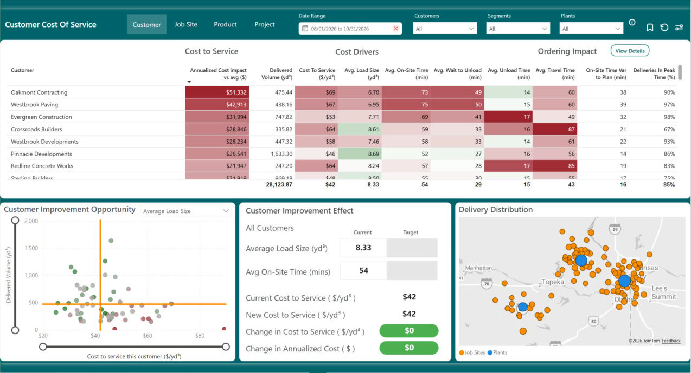

The problem
My role
Shows what each customer really costs to serve. Delivery data is turned into a cost per cubic yard and ranked by how far each customer sits above or below the average, so the costliest ones come first, next to the drivers behind the number: load size, time on site, wait to unload and travel time.
Questions it answers
- Which customers cost the most to serve, and why?
- Does the cost sit with the customer, a job site, a product or a project?
- What would a better average load size or less time on site be worth over a year?
- Ready-mix concrete
- 118 DAX measures
- Imperial and metric
- What-if targets
- Delivery map
25-second silent walkthrough, including the View Details page.
Screenshots
